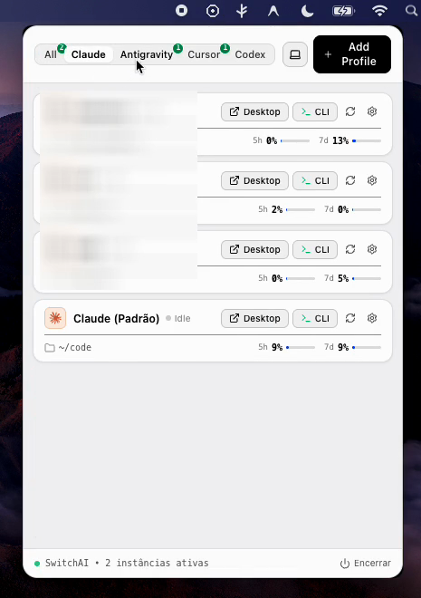
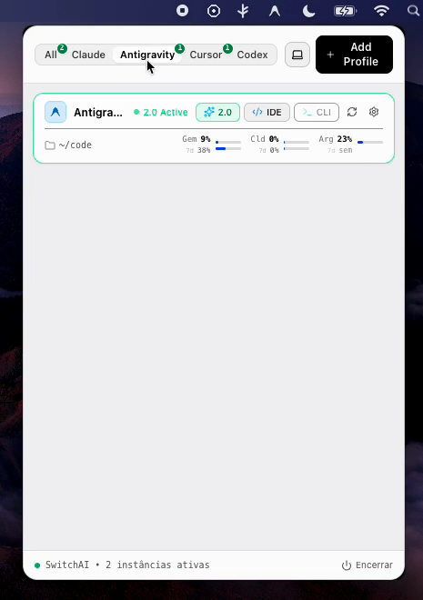
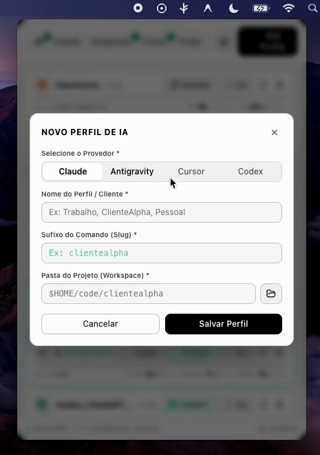
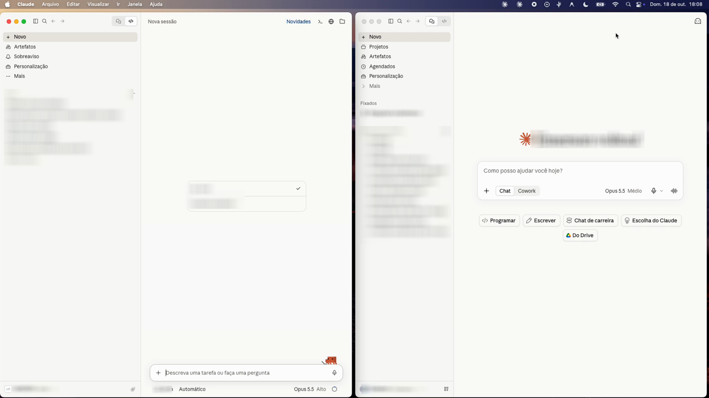

O utilitário definitivo para a barra de menus do macOS. Alterne entre contas de clientes no Claude, Cursor, Antigravity e ChatGPT com instâncias totalmente isoladas e acompanhe limites de consumo antes do bloqueio.
Gravação em tempo real mostrando a abertura na Menu Bar, o acionamento de instâncias e a leitura ao vivo das cotas de cada provedor.
Capturas reais da interface na barra de menus do macOS, monitoramento de cotas ao vivo e isolamento multi-instância.

Visão Geral & Filtros
Abas por provedor com contadores de instâncias ativas, atalhos de disparo Desktop/CLI e medidores de consumo.

5 Cotas Granulares
Monitoramento ao vivo das cotas do Antigravity (Gemini Pro/Flash 5h/7d, Claude e Argon), Cursor e Codex.

Criação Instantânea
Modal integrado para criar perfis isolados em segundos, escolhendo provedor, slug de terminal e diretório workspace.

Isolamento Real de Sessão
Dois Claude Desktop abertos simultaneamente com contas e projetos distintos, sem conflito de cache ou cookies.
Criado para desenvolvedores e consultores que utilizam IAs intensivamente em múltiplos contextos de trabalho.
Se você atende múltiplos clientes ou tem conta pessoal e corporativa, abrir o Claude Desktop ou Cursor exigia deslogar e logar novamente toda hora. O SwitchAI isola completamente o diretório de dados (--user-data-dir), permitindo abrir várias instâncias simultaneamente sem interferência.
Nada é mais frustrante do que estar no meio de um refactor complexo e ser bloqueado pelo limite de 5 horas do Claude Sonnet ou pela cota semanal do Gemini. O SwitchAI inspeciona os arquivos de telemetria oficiais e mostra barras claras de progresso e contagem de reset antes de você ficar sem IA.
Com um único clique em [ CLI ], o SwitchAI abre o terminal no diretório correto do projeto, injetando as variáveis de ambiente necessárias (CLAUDE_CONFIG_DIR) sem exigir que você decore comandos manuais longos.
Diferente de extensões ou serviços web que pedem sua API Key e enviam para servidores desconhecidos, o SwitchAI roda 100% na sua máquina. Seus cookies, tokens e dados permanecem nas pastas nativas do sistema com máxima segurança.
Integração profunda com os ecossistemas mais utilizados por engenheiros de software modernos.
Claude Desktop e Claude Code CLI. Suporte a rate-limit de 5 horas e limite semanal de 7 dias com cronômetro de renovação.
Detecção ativa de instâncias Antigravity 2.0 e IDE. Leitura de 5 cotas oficiais via Google Cloud Code (Gemini, Claude e Argon).
Múltiplos perfis do Cursor e suporte nativo ao Grok Bot. Telemetria dividida em 3 consumos: Grokbot, Cursor models e Other models.
ChatGPT Desktop e Codex CLI nativo. Leitura da API oficial backend-api com plano de assinatura e ciclo de consumo de 30 dias.
O SwitchAI opera exclusivamente no seu Mac. Nenhuma credencial, cookie, token ou histórico de sessão é enviado para servidores externos. Suas configurações ficam salvas no seu disco local e as instâncias de IA utilizam as pastas protegidas nativas de cada provedor.